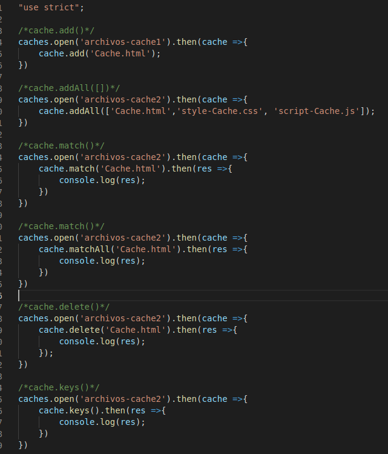

Lección 23 - Cache
Definición: El cache es una memoria a corto plazo que posee el usuario dentro del naveador, que lo que hace es alamenar información
para que no se solicite muchas veces. Si por ejempl0, todo el tiempo que recarguemos la pagina nosotros vamos a cargar los mis mos archivos,
podemos alacenarlos en cache. Cabe destacar que el cache se trabaja con promesas.
Apertura de cache: caches.open("nombre del objeto cache").then(cache => {cache.add()});
Metodos:
- cache.add("nombre del archivo que queremos almacenar en cache")
- cache.addAll(['index.html','style.css']): Recibe una lista de archivos a guardar
-
cache.match('index.html').then(value =>{res =>{}}): Consulta un archivo con ese nombre en el cache y devuelve una promesa con el primer elemento
que coincida con el nombre que le pasamos.
-
cache.matchAll('index.html').then(value =>{res => {}}): Trae todos los archivos que coincidan con ese nombre en el cache y devuelve una promesa
que contiene un array de los archivos devueltos con ese mismo nombre.
- cache.delete('index.html'): Elimina el primer archivo que encuentre con el nombre que le pasamos.
- cache.keys().then(res =>{}): Devuelve toda la data del cache
Codigo
